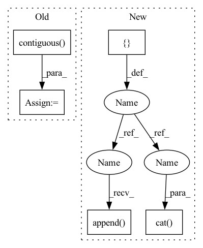

Pattern ID :24648
Before Change
)
input_ids.append(encoding_dict.input_ids)
input_ids = torch.cat(input_ids, dim=0).to(self.device)
decoder_input_ids = input_ids[:, :-1].contiguous()
labels = input_ids[:, 1:].contiguous()
perm_mask = torch.ones((input_ids.shape[0],
decoder_input_ids.shape[1],
decoder_input_ids.shape[1]),
dtype=torch.float).to(self.device)
for t_index in range(self.max_seq_length-1):
perm_mask[:, -t_index, -(self.max_seq_length-1):-t_index] = 0.0
perm_mask = perm_mask.contiguous()
target_mapping = torch.zeros((input_ids.shape[0], decoder_input_ids.shape[1], decoder_input_ids.shape[1]),
dtype=torch.float).to(self.device)
for index in range(self.max_seq_length-1):
target_mapping[:, index, index] = 1.0
target_mapping = target_mapping.contiguous()
outputs = self.decoder(decoder_input_ids,
labels=labels, perm_mask=perm_mask, target_mapping=target_mapping)
After Change
def calculate_loss(self, corpus, epoch_idx=-1, nll_test=False):
text_sequence = corpus["target_text"]
input_ids = []
attn_masks = []
for text in text_sequence:
sentence = " ".join([self.sos_token] + text + [self.eos_token])
encoding_dict = self.tokenizer(
sentence,
max_length=self.max_seq_length,
padding="max_length",
truncation=True,
return_tensors="pt",
add_special_tokens=False
)
input_ids.append(encoding_dict.input_ids)
attn_masks.append( encoding_dict["attention_mask"])
input_ids = torch.cat(input_ids, dim=0).to(self.device)
attn_masks = torch.cat(attn_masks , dim=0) .to(self.device)
decoder_target_ids = input_ids[:, 1:].contiguous()
In pattern: SUPERPATTERN
Frequency: 3
Non-data size: 5
Instances Fragment ID: 76430382
Project Name: rucaibox/textbox
Commit Name: 53c76331ad0c943d52e3310affd25d0e505eb830
Time: 2021-01-19
Author: 1020139164@qq.com
File Name: textbox/model/LM/xlnet.py
M Class Name: XLNet
N Class Name: XLNet
M Method Name: calculate_loss(4)
N Method Name: calculate_loss(3)
M Parent Class: UnconditionalGenerator
N Parent Class: UnconditionalGenerator
M File Name: textbox/model/LM/xlnet.py
N File Name: textbox/model/LM/xlnet.py
M Start Line: 90
M End Line: 113
N Start Line: 72
N End Line: 111
Before Change
)
input_ids.append(encoding_dict.input_ids)
input_ids = torch.cat(input_ids, dim=0).to(self.device)
decoder_input_ids = input_ids[:, :-1].contiguous()
labels = input_ids[:, 1:].contiguous()
perm_mask = torch.ones((input_ids.shape[0],
decoder_input_ids.shape[1],
decoder_input_ids.shape[1]),After Change
def calculate_loss(self, corpus, epoch_idx=-1, nll_test=False):
text_sequence = corpus["target_text"]
input_ids = []
attn_masks = []
for text in text_sequence:
sentence = " ".join([self.sos_token] + text + [self.eos_token])
encoding_dict = self.tokenizer(
sentence,
max_length=self.max_seq_length,
padding="max_length",
truncation=True,
return_tensors="pt",
add_special_tokens=False
)
input_ids.append(encoding_dict.input_ids)
attn_masks.append( encoding_dict["attention_mask"])
input_ids = torch.cat(input_ids, dim=0).to(self.device)
attn_masks = torch.cat( attn_masks, dim=0) .to(self.device)
decoder_target_ids = input_ids[:, 1:].contiguous()
Fragment ID: 76430383
Project Name: rucaibox/textbox
Commit Name: 53c76331ad0c943d52e3310affd25d0e505eb830
Time: 2021-01-19
Author: 1020139164@qq.com
File Name: textbox/model/LM/xlnet.py
M Class Name: XLNet
N Class Name: XLNet
M Method Name: calculate_loss(4)
N Method Name: calculate_loss(3)
M Parent Class: UnconditionalGenerator
N Parent Class: UnconditionalGenerator
M File Name: textbox/model/LM/xlnet.py
N File Name: textbox/model/LM/xlnet.py
M Start Line: 90
M End Line: 113
N Start Line: 72
N End Line: 111
Before Change
// out = self.conv2(out, batch)
// out = self.conv3(out, batch) // n_points x length_features
// reshape back into batch
out = out.contiguous() .view(batch_size, n_vertices, -1)
// aggregate features from vertices
out = out.max(dim=-2, keepdim=False)[0]After Change
// Vertex features + track global features from each layer (if skip connections are used)
// In EdgeConv features from different layers are concatenated per node and then aggregated
// but since the pooling is element-wise on feature vectors, we can swap the operations to save memory
aggr_features = []
out = self.conv_layers[0](pos_flat, batch)
if self.config["skip_connections"]:
aggr_features.append( self.global_pool(out, batch, batch_size))
for conv_id in range(1, self.config["conv_depth"]):
out = self.conv_layers[conv_id](out, batch)
if self.config["skip_connections"]:
aggr_features.append(self.global_pool(out, batch, batch_size))
feature = torch.cat( aggr_features, -1) if self.config["skip_connections"] else self.global_pool(out, batch, batch_size)
// post-processing
out = self.lin(feature) Fragment ID: 76430380
Project Name: maria-korosteleva/garment-pattern-estimation
Commit Name: fd8ff19db9d988e5ac9788f8b67560dab3cc7c33
Time: 2020-09-23
Author: mariako@kaist.ac.kr
File Name: nn/net_blocks.py
M Class Name: EdgeConvFeatures
N Class Name: EdgeConvFeatures
M Method Name: forward(2)
N Method Name: forward(2)
M Parent Class: nn.Module
N Parent Class: nn.Module
M File Name: nn/net_blocks.py
N File Name: nn/net_blocks.py
M Start Line: 106
M End Line: 125
N Start Line: 137
N End Line: 161
Before Change
return_tensors="pt")
target_ids.append(encoding_dict["input_ids"])
target_ids = torch.cat(target_ids, dim=0).to(self.device)
target_ids = target_ids.contiguous()
outputs = self.encoder_decoder(input_ids,
attention_mask=attn_masks,
decoder_input_ids=target_ids,
labels=target_ids)After Change
encoder_attn_masks = torch.cat(encoder_attn_masks, dim=0).to(self.device)
target_ids = []
decoder_attn_masks = []
for text in target_text:
sentence = " ".join(text)
decoding_dict = self.tokenizer(
sentence, max_length=self.max_target_length, padding="max_length", truncation=True, return_tensors="pt"
)
target_ids.append(decoding_dict["input_ids"])
decoder_attn_masks.append( decoding_dict["attention_mask"])
target_ids = torch.cat(target_ids, dim=0).to(self.device)
decoder_attn_masks = torch.cat( decoder_attn_masks, dim=0) .to(self.device)
decoder_input_ids = target_ids[:, :-1].contiguous()
decoder_attn_masks = decoder_attn_masks[:, :-1].contiguous() Fragment ID: 76430384
Project Name: rucaibox/textbox
Commit Name: 53c76331ad0c943d52e3310affd25d0e505eb830
Time: 2021-01-19
Author: 1020139164@qq.com
File Name: textbox/model/Seq2Seq/bert2bert.py
M Class Name: BERT2BERT
N Class Name: BERT2BERT
M Method Name: calculate_loss(3)
N Method Name: calculate_loss(3)
M Parent Class: ConditionalGenerator
N Parent Class: ConditionalGenerator
M File Name: textbox/model/Seq2Seq/bert2bert.py
N File Name: textbox/model/Seq2Seq/bert2bert.py
M Start Line: 102
M End Line: 119
N Start Line: 103
N End Line: 130